Hide Table of Contents
Hide Table of Contents
 Tutorials
About the API
Work with the API
Graphics and feature layers
Popups and Info Windows
Geoprocessor
Operations Dashboard
Create extensions
Mobile
ArcGIS Server Services
References
What's New archive
Tutorials
About the API
Work with the API
Graphics and feature layers
Popups and Info Windows
Geoprocessor
Operations Dashboard
Create extensions
Mobile
ArcGIS Server Services
References
What's New archive
The Analysis Widgets provide access to the ArcGIS Spatial Analysis Service, which allows you to perform common spatial analyses on your hosted data, via the ArcGIS API for JavaScript. The analysis widgets feature:
- Well-designed user interface where users can select parameters and submit an analysis job.
- Event triggering as analysis job progresses - when a job starts, ends and succeeds. Error messages are provided when a job fails. This helps you monitor an analysis tasks from your JavaScript apps.
- Result display on the map. You have the option to save the output data as a hosted feature service, or return as a feature collection.
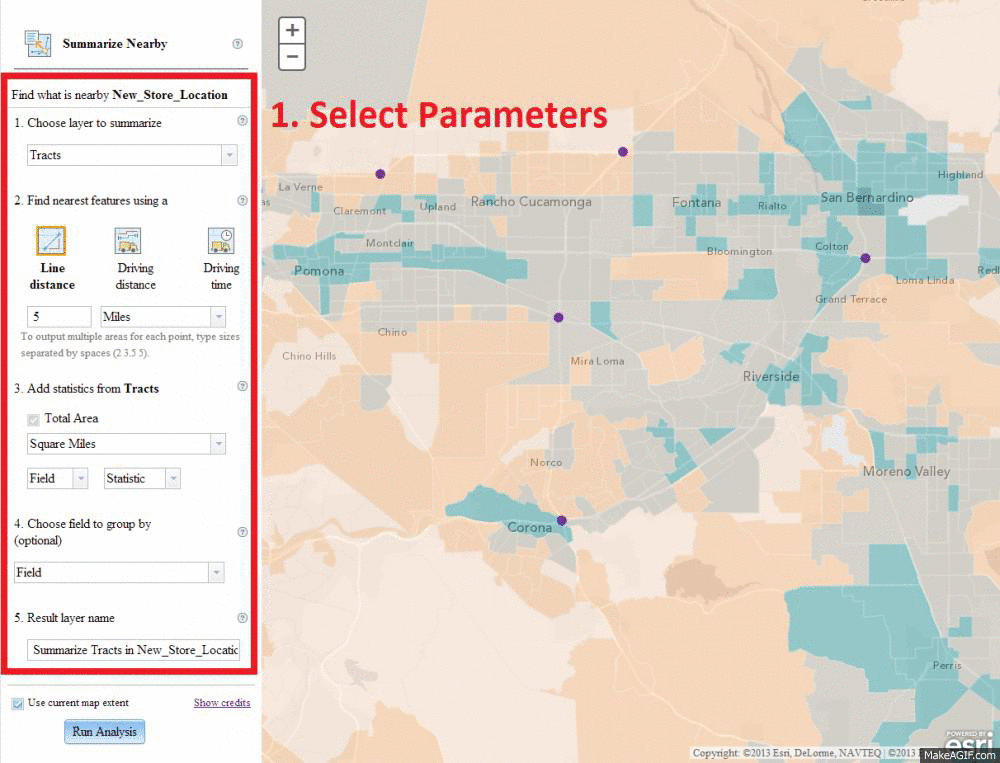
Available Widgets
Currently there are 22 analysis widgets available in the ArcGIS API for JavaScript, as well as in the ArcGIS REST API.
| Widget (Links to documentation) |
Usage | Input Feature Layer Names and Types |
|---|---|---|
| AggregatePoints [ JavaScript API | REST API ] (added at v3.6) |
Aggregate points into polygons where the points are located. |
|
| CalculateDensity [ JavaScript API | REST API ] (added at v3.12) |
Create a density map from point or line features by spreading known quantities of some phenomenon (represented as attributes of the points or lines) across the map. |
|
| ConnectOriginsToDestinations [ JavaScript API | REST API ] (added at v3.12) |
Measure the travel time or distance between pairs of points. |
|
| CreateDriveTimeAreas [ JavaScript API | REST API ] (added at v3.7) |
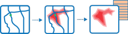 Create polygons showing the areas that can be reached within a given time or distance. |
|
| CreateBuffers [ JavaScript API | REST API ] (added at v3.6) |
Create buffer polygons from input features. |
|
| CreateViewshed [ JavaScript API | REST API ] (added at v3.12) |
Creates areas that are visible based on locations you specify. |
|
| CreateWatersheds [ JavaScript API | REST API ] (added at v3.12) |
Creates catchment areas based on locations you specify. |
|
| DeriveNewLocations [ JavaScript API | REST API ] (added at v3.12) |
 |
|
| DissolveBoundaries [ JavaScript API | REST API ] (added at v3.7) |
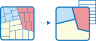 Dissolve polygons that overlap or share a common boundary. |
|
| EnrichLayer [ JavaScript API | REST API ] (added at v3.7) |
Enrich input features with people, places and businesses facts about nearby areas. |
|
| ExtractData [ JavaScript API | REST API ] (added at v3.7) |
 |
|
| FindExistingLocations [ JavaScript API | REST API ] (added at v3.12) |
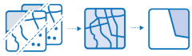 Select features in the input layer that meet an attribute and/or spatial query you specify. |
|
| FindHotSpots [ JavaScript API | REST API ] (added at v3.7) |
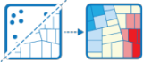 Find statistically signficant clusters of input features or high/low values. |
|
| FindNearest [ JavaScript API | REST API ] (added at v3.7) |
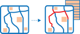 For each feature on an input layer, find its closest feature on another layer. |
|
| FindSimilarLocations [ JavaScript API | REST API ] (added at v3.12) |
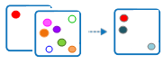 Measure the similarity of candidate locations to one or more reference locations. |
|
| InterpolatePoints [ JavaScript API | REST API ] (added at v3.12) |
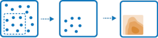 Predict values at new locations based on measurements from a collection of points. |
|
| MergeLayers [ JavaScript API | REST API ] (added at v3.7) |
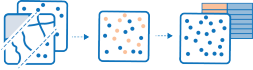 Merge features from multiple layers into a new layer. |
|
| OverlayLayers [ JavaScript API | REST API ] (added at v3.7) |
Combine multiple layers into one single layer with information from the original layers preserved. |
|
| PlanRoutes [ JavaScript API | REST API ] (added at v3.12) |
Determine how to efficiently divide tasks among a mobile workforce. |
|
| SummarizeNearby [ JavaScript API | REST API ] (added at v3.7) |
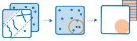 For each feature on an input layer, summarize data within a distance from features on another layer. |
|
| SummarizeWithin [ JavaScript API | REST API ] (added at v3.7) |
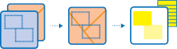 For each polygon on an input polygon layer, summarize data located within it from features on another layer. |
|
| TraceDownstream [ JavaScript API | REST API ] (added at v3.12) |
Determine the flow paths in a downstream direction from the locations you specify. |
|
What Do I Need to Run an Analysis Widget?
An ArcGIS.com subscription is required. Not only will you need to store data using your ArcGIS.com account, but also sign-in is always required to run an analysis job as a credit-based service. Executing analysis tasks and hosting feature services are not available to personal account users. See ArcGIS.com - Plans and ArcGIS for Developers - Plans for more information.
Making Your First Analysis Widget Application
In this section, we will build a sample that uses the SummarizeNearby widget to analyze the socioeconomic conditions near input locations, as the Analysis - SummarizeNearby Sample demonstrates. Before following these instructions, you should already know how to build a simple map and add feature layers to the map. If not, check out Build your first application and Vector Feature Layer Samples.
Choose a widget that fits your needs. In this tutorial, we would like to analyze the median income near five proposed locations for a new retail store. SummarizeNearby is the widget best suited to complete this analysis.
Configure the layout of your application. We need to leave a room for the analysis widget to be added. A recommended way is to use Dojo's BorderContainer and ContentPanes. In the example below, we put two ContentPanes inside a BorderContainer. One ContentPane is anchored to the left to accomodate the widget, while the other is centered and will be used by the map. You may also use any other approach to layout your app.
<!DOCTYPE html> <html> <head> ... <style> html, body, #border-container { height: 100%; margin: 0; } </style> <script src="//js.arcgis.com/3.14/"></script> <script> require([ "dijit/layout/BorderContainer", "dijit/layout/ContentPane", ... ], function(){ ... }; </script> </head> <body class="claro"> <div id="border-container" data-dojo-type="dijit/layout/BorderContainer" data-dojo-props="design:'headline',gutters:false"> <div id="map" data-dojo-type="dijit/layout/ContentPane" data-dojo-props="region:'center'" style="padding: 0;"></div> <div data-dojo-type="dijit/layout/ContentPane" data-dojo-props="region:'left'" style="width: 300px;"> <div id="toolPane"></div> </div> </div> </body> </html>Add the input feature layers to the map. Each of the analysis widgets requires specific feature input layers and geometry types. Refer to the Available Widgets table above to see which layers are needed for each analysis widget.
Keep in mind that you should construct the widget after all the input layers are loaded. A recommended way to do so is to use the map.addLayers() method to add all layers at once, and then listen to the map.on("layers-add-result") event.
Construct the widget. Load the module at
"esri/dijit/analysis/SummarizeNearby", construct the widget in the callback function of map.on("layers-add-result"), and place the widget at a DOM node (In this case,<div id="toolPane"></div>).-
Configure the widget. As many other widgets, you can specify properties in the first parameter of the constructor. These properties are used to configure the widget when initialized.
- Input layer(s) (required): incorporate layers into the widget's user interface. Some properties accept one single layer, while some take an array of layers. Refer to the Available Widgets table above or the API reference to find the input layers a widget requires.
- portalUrl or analysisGpServer (required): connect to the geoprocessing server used to execute the analysis.
portalUrlis recommended. You may setportalUrlas either"http://www.arcgis.com"or your organization's URL. The widget will figure out the path to its corresponding geoprocessing server. If you know which geoprocessing server you would like to use, specifyanalysisGpServerinstead. - map (required when use map extent is checked): connect to the map. This property is required when you would like to use the map extent to limit the area of the analysis.
- returnFeatureCollection (optional): when true, the analysis results are returned as a feature collection object. No hosted feature service will be created in your ArcGIS.com account; otherwise, the analysis results are always a hosted feature service in your account. Default value is
false. - outputLayerName (optional): set the default output layer name displayed in the widget.
- showChooseExtent, showSelectFolder, showCredits, showHelp (optional): show or hide a user interfact element as indicated below.
showSelectFolderisfalseby default. The other three aretrueif not specified.
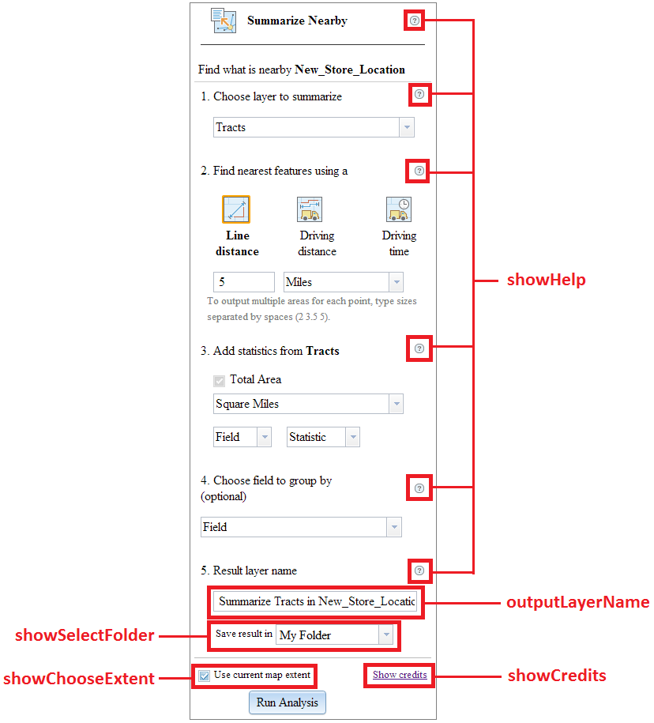
- Other properties (optional): vary from widget to widget. Refer to the API reference for a complete list of available properties for each widget.
-
Listen to the .on("job-result") event and add results to the map. This event fires when an analysis job is completed. It returns an object with a property named value, from which you can get the resulted data and add them to the map.
- When returnFeatureCollection is
falseor not set, value contains a url property. You can use this URL to create a feature layer. - When returnFeatureCollection is
true, value itself is a feature collection, which you can pass into the feature layer constructor.
- When returnFeatureCollection is
- View your application from a browser to validate the user experience. You may check out the Analysis - SummarizeNearby Sample to see the final output. You may also use some other UI elements to improve user experience (such as showing a
ProgressBarwhen the job is in process).
var pointLayer = new FeatureLayer("http://services.arcgis.com/V6ZHFr6zdgNZuVG0/arcgis/rest/services/New_Store_Location/FeatureServer/0");
var polygonLayer = new FeatureLayer("http://services.arcgisonline.com/ArcGIS/rest/services/Demographics/USA_Retail_Spending_Potential/MapServer/2", {
opacity: 0.5
});
map.addLayers([polygonLayer, pointLayer]);
map.on("layers-add-result", function(){
...
});
var summarizeNearby;
map.on("layers-add-result", function(){
summarizeNearby = new SummarizeNearby({
...
}, "toolPane");
});
map.on("layers-add-result", function(){
summarizeNearby = new SummarizeNearby({
sumNearbyLayer: pointLayer,
summaryLayers: [polygonLayer],
portalUrl: "http://www.arcgis.com",
map: map
}, "toolPane");
});
summarizeNearby.on("job-result", parseResult);
...
function parseResult(result){
var resultLayer = new FeatureLayer(result.value.url || result.value, {
outFields: ['*'],
infoTemplate: new InfoTemplate()
});
map.addLayer(resultLayer);
};
What's next?
- Check out the Analysis - FindHotSpots sample, which demonstrates a best practice to build an analysis app and use the results.
- Refer to the API reference to find more details about each widget.